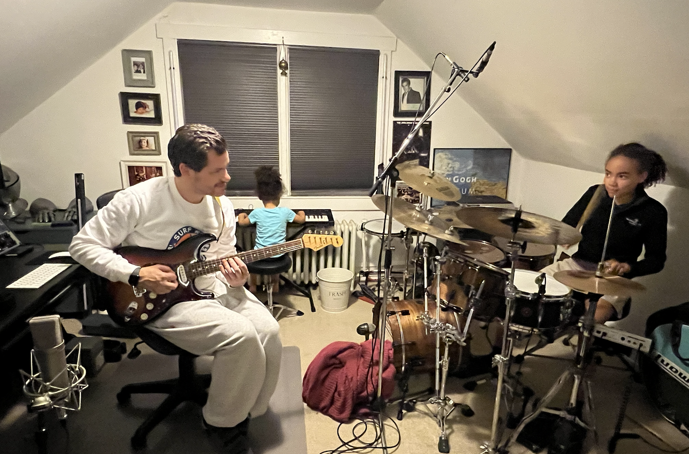

Musician, engineer, educator, mentor.

I'm Jake Munch: A multi-instrumentalist, audio engineer, and educator based in the Greater Philadelphia area. With a Bachelor of Science in Jazz Performance from Temple University and decades of hands-on experience, I bring both deep musicianship and serious technical chops to everything I do.
My work spans two worlds that feed each other: music performance and instruction, and professional audio engineering and design. Whether I'm teaching a student their first drum rudiment or designing a complex wireless system for a 20-mic theatrical production, I bring the same commitment to excellence and clear communication.
I've built a reputation as a go-to resource for live sound oversight, system design, and mentoring in the Philadelphia-area theater and performing arts community. My work includes long-standing relationships with organizations that trust me to deliver professional-grade results while developing the next generation of audio engineers:
Sound supervisor and mentor for the high school theater program. I manage complex wireless RF systems, design sound for full-scale productions, and train student operators in pro audio workflows. My students were nominated for CAPPIES awards in both 2024 and 2025.
Provided professional sound engineering and consulting for theatrical productions, including system assessment, remediation planning, and hands-on mentoring of student and adult volunteers.
Audio design and live sound engineering for school productions and events, bringing professional quality to community-scale performances.
Live sound consulting and engineering for a community theater production, delivering polished results in a short timeframe.
My technical expertise has led to close working relationships with Shure Incorporated and Sennheiser electronic SE & Co., collaborating on expert-level troubleshooting scenarios for wireless microphone and in-ear monitoring systems from both manufacturers. When problems go beyond the manual, I'm the kind of user these companies want on the other end of the line. That depth of knowledge is what I bring to every project and every student.
One of my biggest passions is mentoring. Whether it's high school students learning to mix their first musical or an aspiring engineer trying to break into pro audio, I believe in teaching the why behind every decision...not just which button to push, but what it does and when to push it. My students don't just learn techniques; they learn to think like engineers and musicians.
Temple University, Philadelphia
Expert-level troubleshooting collaboration with both manufacturers
Studio-grade gear, world-class microphones, and vintage instruments — view the full inventory
Multi-year engagements across Philadelphia-area venues
Drums, guitar, piano, classical percussion
I'd love to hear about your project, your goals, or your questions.
Get in Touch